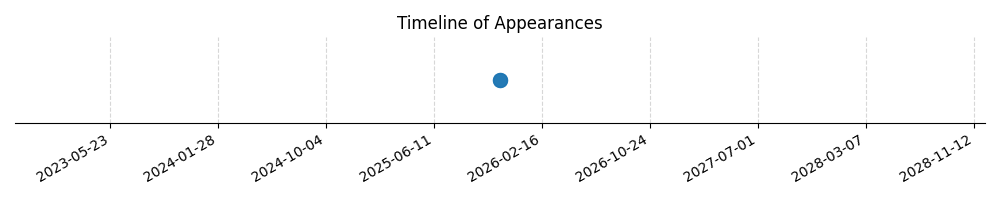

Kategorie: Letecké předpisy
Převodní vrstva (transition layer) je definována jako vzdušný prostor mezi převodní nadmořskou výškou (transition altitude) a převodní hladinou (transition level). Tyto výšky a hladiny jsou klíčové pro bezpečné letové operace, zejména při přechodu z letu podle přístrojů (IFR) do letu podle viditelnosti (VFR) a naopak, a pro sjednocení výškových údajů mezi letadly a řízením letového provozu.

| Datum výskytu |
|---|
| 2025-11-11 |